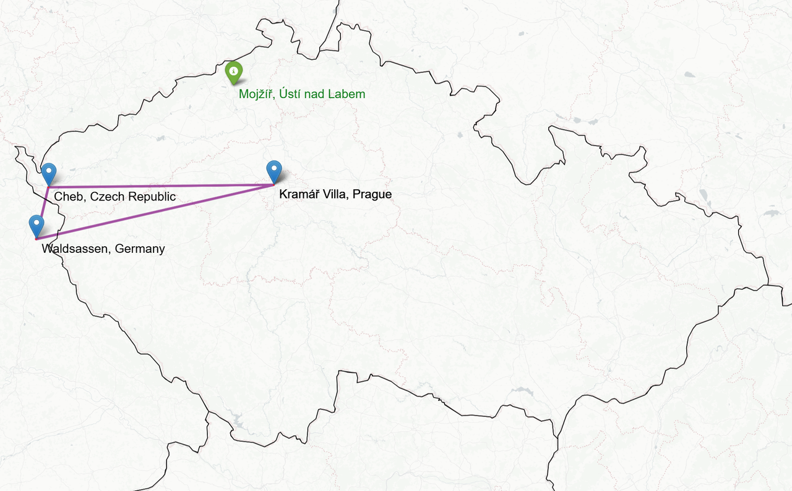

Fiala's Government 2022-2025: Nutella from Germany, Hope from Mojžíř and Compassion from Gaza
Looking back to the Czech government's 2022–2025 term, a few moments linger. Small details and fleeting impressions that together form a mosaic of Petr Fiala as a leader and as a person. Three events, in three different years:
- 🛒 A shopping trip in Germany (2023)
- 🏚 A visit to the socially excluded locality of Mojžíř (2024)
- 🌍 Silence on Gaza (2025)
Let's explore what they reveal, not just about him, but the ways he approached people, what he offered, and how those moments shaped both sides.
2023: Nutella from Germany
Back in 2022, the post-pandemic shift in the Czech government felt like a swap of carefully crafted public images. Prime Minister Andrej Babiš, a billionaire businessman who often portrayed himself as “one of the people,” was replaced by the academic elitist Petr Fiala, profesor of political science and leader of oposition, who presented himself as the leader ready to “fix” the country. This change in narrative was enthusiastically amplified by the media, which quickly shifted from its skepticism of Babiš to admiration for Fiala.
During the Babiš era, I regularly watched Czech Television. It was critical, engaged, and held those in power accountable, as public service media should. But under Prime Minister Petr Fiala, something changed. The sharp edge dulled. The uncomfortable questions disappeared. The tone softened. Eventually, I stopped watching.
Take Otázky Václava Moravce (Questions of Václav Moravec), the flagship political talk show. For years, it was the arena where government and opposition clashed under tough questioning. But over time, the show’s questions increasingly resembled the moderator’s own opinions, and guests were often selected to underscore these views. Those who didn’t fit the narrative simply weren’t invited. For example Tomio Okamura, the leader of an opposition party representing 10–15% of voters, didn’t apear any single time during Fiala's term. Ahead of the EU elections, Czech TV structured debates in a way favorable to pro-government parties, arranging discussions by individual party rather than coalition, which silenced opposition voices. Finally, the presidential debate between Babiš and Pavel felt like the moderator was subtly steering viewers toward voting for goverment conformist Pavel. The Czech TV strategy worked: Petr Pavel won the election in 2022 and became president in 2023.
Paradoxically, the unconditional support and lack of accountability in the media which had worked in the presidential elections, didn’t always work the same way in the Prime Minister’s favor. Isolated from genuine criticism, at some point, Fiala challenged Otázky Václava Moravce by spinning off his own pro-government series: Otázky a odpovědi z Kramářovy vily (Questions and Answers from the Kramář Villa). After the unprecedented inflation of 2022, with households still reeling from the impact, Fiala sought to present a different perspective on the situation. “Grocery prices are finally falling,” he declared reassuringly, “but many of you say shopping abroad is still cheaper.” So, in an almost sitcom-like turn, the Prime Minister set off to conduct his own reality check.
He drove to Waldsassen, a small German town near the border, and bought nine everyday items: milk, butter, bread, Nutella, chocolate, ketchup, and more. The total: around 20 euros. Then he crossed back to Cheb, one of the most economically struggling regions in the Czech Republic, and bought the same basket. To his surprise, the Czech total was over 2 euros higher. He even noticed the German products often came in larger packages. Back at the Kramář Villa, the Czech prime minister’s historic residence and a symbol of executive power much like 10 Downing Street in Britain, Fiala unpacked his groceries like a TV salesman, challenging Horst Fuchs as he compared items one by one. Butter? Thirty percent cheaper in Germany. Coca-Cola and Heinz ketchup? Bigger bottles across the border, making the price gap even wider.
And then came Nutella. Not only was it about 30% cheaper in Germany, but when comparing unit prices, the Czech jar turned out to be almost twice as expensive as its German counterpart. Normally stoic Fiala now shaped his voice, making an exaggerated attempt at surprise, faking disbelief as he declared, “These jars look the same, but actually, the Czech one has much smaller content.”
Questions and Answers with Prime Minister Petr Fiala from the Kramář Villa, Special Episode, source: Official YouTube account of the Office of the Government
For me, living in Hamburg at the time, Fiala’s video had an unexpected perk: it inspired my Christmas shopping. That year, all my friends got the same present—a giant jar of Nutella from Hamburg. A sweet reminder that sometimes political theater has practical side effects. Fiala concluded that the government doesn’t set prices—which is true—but promised to “talk to Nutella, Coca-Cola, and the supermarkets” and demand an explanation. Apparently however, there was never any sign that Ferrero agreed to make Czech Nutella bigger or cheaper.
As far as I know, this special episode of Questions and Answers from the Kramář Villa was also the last. Politicians like Fiala often frame such moments as a “communication failure” and move on. But the real issue runs deeper: it’s a lack of compassion for people living in regions like Cheb—people for whom saving some money on groceries isn’t a social media experiment, but a necessity. They have known for years that food is cheaper in Germany. They didn’t need the Prime Minister to prove it. But because they aren’t unpacking shopping bags in the Kramář Villa, they remain invisible. And that invisibility is also a failure of mainstream media, which has stopped representing these voices. That silence is what allowed Fiala to think there was space for this kind of spectacle: a Prime Minister crossing the border to “discover” a reality that thousands of his citizens live every day.

Map of Petr Fiala’s shopping roadtrip from Kramář Villa → Waldsassen → Cheb → back. Highlighted is also the location of Mojžíř in Ústí nad Labem. Generated using Folium and OpenStreetMap data.
2024: Hope from Mojžíř
In August 2024, ahead of the local elections, Prime Minister Petr Fiala visited Mojžíř, an excluded neighborhood in Ústí nad Labem. The district is notorious for its severe social challenges: a concentrated Roma minority, high unemployment, poor education, and scarce opportunities, creating a marginalized and tense atmosphere. Despite this, Fiala approached the visit as a photo opportunity, seemingly more captivated by the location than by its complex issues.
A Brief History of Mojžíř
Mojžíř, a neighborhood with a population of 5,000, is part of the Neštěmice district in Ústí nad Labem. The residential complex of multi-story buildings on the outskirts of Ústí was established in the late 1980s. The problematic privatization process of the early 1990s accelerated the area's decline, and over time it has come to symbolize exclusion in the Czech Republic.
Yveta Tomková, the mayor of Neštěmice, explains how this privatization, which involved selling residential buildings along with their tenants, marked a turning point. "It was Ústí's greatest disaster," she says. In the years that followed, many apartment buildings were bought by investors with no ties to Ústí, creating a cycle of poverty. Over 60% of apartment owners in Mojžíř are absentee landlords who target welfare recipients, with the state paying exorbitant rent rates.
Interview with Yveta Tomková, mayor of Neštěmice, Ústí nad Labem, on social policies and the situation in Mojžíř. Source: YouTube, KRNDA & LŮZR #7
Tomková, who lives in the area, paints a bleak picture of daily life: “When they mow the lawns here, it’s under police supervision. The lawnmowers were attacked by abandoned children who jumped on the machines and threw wires and stones underneath,” she recalls. The resignation is so widespread that she’s seen toddlers riding toy bikes in the heavy traffic of the roadways around Mojžíř, without any supervision.
The Awkward Encounter
Mojžíř is not a place where politicians normally go. When they do, it’s as performers in a carefully orchestrated play. Prime Minister Petr Fiala’s 2024 visit was no different: a swift cleanup of pre-selected routes, bodyguards forming a human curtain, and a carefully prepared discussion with "non-problematic" residents, designed to highlight specific issues, a perfect setup ahead of the regional and senate elections. The locals, understandably curious, gathered to watch the spectacle. And on the periphery of this official swarm stood an unscripted couple: a Roma woman in a worn, heart-emblazoned T-shirt, holding the hand of a young boy. They had come to see the show, but instead, became its main characters.
The woman and her child were positioned awkwardly between PM's limousine and the official delegation. Fiala, in his perfectly tailored suit that screamed his disconnection from this world, approached them. Without waiting for the woman to release the boy's right hand, he reached out and shook the left, asking, "How are you here?". The cameras were already rolling, and the unscripted moment was quietly becoming the most honest scene of the day.
The woman, seizing this rare chance to be heard, began describing her family’s situation, how they had no debts or legal troubles, how her son was responsible and she could not be overly critical of the Roma community she lived among. We are all black here, she said. But Fiala, disconnected and without real interest, heard only what he wanted to hear. Cutting her off, he concluded, “So life here is good, that’s nice to hear.” The moment was pure political accident; his minders, aware the cameras were rolling on this unplanned encounter, tried to steer him away—"Sorry, but the mayor is waiting." Finally, he turned to the mayor of Ústí, attempting to recast the awkwardness into a victory, as if this single, interrupted exchange represented the entire neighborhood’s reality: “See, people are happy here.”
But Tomková quickly corrected him. "Not everyone is happy here," she pointed out, referencing the visible problems—such as the garbage in the streets and other hardships. In a final layer of irony, her entire agenda—the curated "non-problematic" residents and her prepared plea not to be abandoned—was upstaged by this simple, raw exchange. The candid, uncomfortable moment of disconnection became the defining media output of the entire event, revealing more than any scripted discussion ever could.
Excerpt: Mojžíř visit video and political communication, source: Fiala rozjel bolševický bomby, Pavlovy gumácké trenky a normalizace je zpátky | Petr Holec #190
The encounter in Mojžíř was more than just an awkward photo op, it was a revealing glimpse into a hierarchy of disconnection. Imagine the disparity: a woman from an excluded neighborhood, marginalized and vulnerable, speaking to the Prime Minister of the Czech Republic about her daily life, only to have her words summarized and dismissed in a single phrase.
A genuine discussion with the Roma community was never on the program, it was an interruption to the script. At the same time, it was a wake-up call that Roma cannot simply be made invisible when discussing the issue. True change must come from the ground up, with the community itself at the center, supported by genuine political will from the top down. In fact, the hope for Mojžíř was hidden in a simple, missed opportunity: the patience to wait for a child’s hand to be free. That small act of respect would have signaled a world of difference, one where people are truly heard and empowered to shape their own futures, not just swept along by a political agenda.
Watching the video of Fiala and the Roma woman, it becomes clear this script is not unique to Mojžíř. In fact, Fiala is capable of performing both roles. When meeting key figures like Ursula von der Leyen or Mark Rutte in EU and NATO settings, he often exchanges positions, inhabiting the role of the marginalized party. With the Czech people, he becomes the Roma woman with the boy. He offers polite, passive, and reassuring platitudes while deeper issues go unaddressed. The Mojžíř visit becomes a stark mirror, reflecting a consistent governance style based on appeasement and facade. Whether at home or abroad, the performance is the same: the projection of calm obedience, silently affirming, "We are just fine, we will obey, my people are happy."
2025: Compassion from Gaza
There are moments in history when the worst thing you can do is to be silent. When a humanitarian crisis unfolds on our screens, inaction is not neutrality—it is a choice. It is an endorsement of the status quo. The most striking absence of voice during Prime Minister Petr Fiala’s term has been his steadfast silence on the catastrophe in Gaza. While other nations have expressed concern and called for accountability, the Czech Republic stands alone as the only EU country refusing to publicly condemn the Israeli actions that have caused widespread suffering and a staggering loss of life.
This silence is not just a diplomatic position; it is a moral failure. Fiala appears willfully blind: neither acknowledging the scale of the human tragedy nor providing the moral leadership the moment demands. He brushes aside questions, avoids clear answers, and dismisses the reality of what is happening. This stance is compounded by a Czech media landscape that has, with few exceptions, largely ignored international outcry, failing to properly inform the public or hold power to account.
This collective compliance brings to mind the infamous Milgram experiment. In it, ordinary people were pressured into administering what they believed were increasingly dangerous electric shocks to another person. Some refused early on, guided by their conscience. But others continued, justifying their actions by deferring responsibility to the authority of the scientist in the lab coat. Reassured its for the good thing. Tragically, even when the "learner" on the other side of the wall began to scream, then fell terrifyingly silent, some participants still continued to push the lever. Not a single person who continued after the first signs of harm suddenly stopped when the victim went quiet. The real hero, in my view, is not just the one who refuses early, but the one who, upon hearing that silence, finally says: "This has gone too far. I was wrong to follow your orders. I take responsibility for my part, and I stop now. Let’s open the door and see if he is still alive and what we can do."
Sadly, our politicians, those we elect to be the best of us, rarely have this courage. For years, the Czech political consensus has supported Israeli actions without question, without nuance, and without accountability. The media, for the most part, turned a blind eye, creating a void where the images of dying children in Gaza failed to pierce the public consciousness.
But there are cracks in this facade. Outlets like Britské listy have been fiercely critical, calling the common Czech media portrayal of Israel’s strategy as "mowing the grass" what it is: a dehumanizing euphemism for violence. They’ve become one of the few, if not the only, voices in Czech media reporting on the humanitarian crisis.
In June 2025, after a state visit to Japan, President Petr Pavel was asked by a reporter why the Czech Republic wasn’t joining other EU countries in condemning Israel’s actions in Gaza. The question was simple, but the response, or rather, the censorship of it, spoke volumes. Czech TV abruptly ended the broadcast, cutting off any opportunity for public discourse. Reportedly, the President deflected, saying, 'I don’t set government policies.'
Czech TV censored the answer but for the president himself, the seed was planted. Facing questions like this in a foreign environment, Petr Pavel may have had his "Milgram moment", a realisation of the responsibility for actions we take. Perhaps he began to consider the bombed hospitals, people killed in food lines, and most recently the UN’s declaration of femine in Gaza. In August 2025, President Pavel finally broke ranks, stating he does not fully support Netanyahu’s policies or the Israeli military actions in Gaza. It was a significant, welcome crack in the monolith of unconditional support.
I like the fact our president finally expressed compassion with Gaza. Yet, the moment we truly need has still not come from Petr Fiala, the man responsible for government policy. Perhaps, instead of another grocery trip to Germany, he should try shopping in Gaza. The prices there are much higher, the quality far worse, if there is food at all. In December 2024, before the total blockade, one Gazan father managed to find a single jar of Nutella for his children. It costs him $50, more than twice the price of Fiala’s entire shopping basket. He paid a fortune just for the fleeting taste of normalcy and the joy on his children's faces. A story reported by CNN, the kind of report yet to appear in the Czech TV.
See reaction when dad in Gaza brings home jar of Nutella, , Source: CNN YouTube account
Elections on the way
This is the landscape before the 2025 elections. All three moments—the Nutella trip, the visit to Mojžíř, and the silence on Gaza—have a common thread: a lack of compassion for those who are suffering. Fiala preserves the façade of a distant, measured professor, maintaining distance from the people he governs. His campaign slogan reads: 'Now is the time to stand on the right side.' Yet, through his term, it’s clear he has failed to stand where it matters. Whether it’s buying Nutella, visiting Mojžíř, or turning a blind eye to the violence in Gaza, Fiala has failed to be present for those who need help the most.
And the results speak for themselves. Nutella isn’t cheaper, and Fiala’s energy price caps have done more for corporations than for struggling families. The people of Mojžíř remain no better off than before his visit. And when it comes to Gaza, our government's soft stance betrays the values we claim to uphold.
At the end of the day, voters face a clear choice: do we continue down this path, or do we choose a leadership that is present, engaged, and empathetic? A Prime Minister who isn’t just seen among the people, but stands with them—listening, understanding, and acting on their realities. Fiala's side isn’t the 'right side' I want to be on. It’s time to vote for a future with leadership that stands in solidarity, not silence. The election is our chance to change course. Let’s choose a different path.
When you read this far, consider supporting the blog
This is a personal blog, written with great effort to be useful. If you find it useful, consider a small donation. It serves as a welcome feedback that the content is appreciated, and it will help determine the amount of effort I put into future posts.